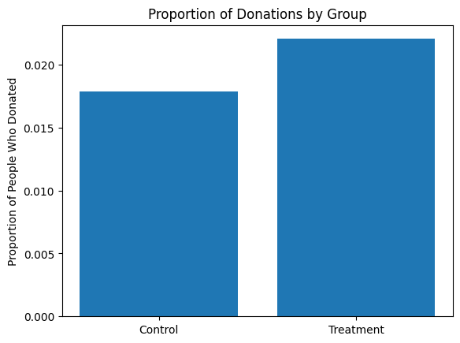

import pandas as pd
df = pd.read_stata('karlan_list_2007.dta')import matplotlib.pyplot as pltproportions = df.groupby('treatment')['gave'].mean().reset_index()
# Create a bar plot
plt.bar(proportions['treatment'], proportions['gave'], tick_label=['Control', 'Treatment'])
plt.ylabel('Proportion of People Who Donated')
plt.title('Proportion of Donations by Group')
plt.show()
from scipy import stats
import statsmodels.api as sm
treatment_donated = df[df['treatment'] == 1]['gave']
control_donated = df[df['treatment'] == 0]['gave']
# Perform a t-test
t_stat, p_value = stats.ttest_ind(treatment_donated, control_donated)
print(f"T-test results: t-statistic = {t_stat}, p-value = {p_value}")
# Perform a linear regression
df['intercept'] = 1
model = sm.OLS(df['gave'], df[['intercept', 'treatment']])
results = model.fit()
print("Linear regression results:")
print(results.summary())T-test results: t-statistic = 3.101361000543946, p-value = 0.0019274025949016982
Linear regression results:
OLS Regression Results
==============================================================================
Dep. Variable: gave R-squared: 0.000
Model: OLS Adj. R-squared: 0.000
Method: Least Squares F-statistic: 9.618
Date: Thu, 11 Apr 2024 Prob (F-statistic): 0.00193
Time: 11:55:08 Log-Likelihood: 26630.
No. Observations: 50083 AIC: -5.326e+04
Df Residuals: 50081 BIC: -5.324e+04
Df Model: 1
Covariance Type: nonrobust
==============================================================================
coef std err t P>|t| [0.025 0.975]
------------------------------------------------------------------------------
intercept 0.0179 0.001 16.225 0.000 0.016 0.020
treatment 0.0042 0.001 3.101 0.002 0.002 0.007
==============================================================================
Omnibus: 59814.280 Durbin-Watson: 2.005
Prob(Omnibus): 0.000 Jarque-Bera (JB): 4317152.727
Skew: 6.740 Prob(JB): 0.00
Kurtosis: 46.440 Cond. No. 3.23
==============================================================================
Notes:
[1] Standard Errors assume that the covariance matrix of the errors is correctly specified.df['intercept'] = 1
# Define the model and fit it
probit_model = sm.Probit(df['gave'], df[['intercept', 'treatment']])
probit_results = probit_model.fit()
# Print the summary of the regression results
print(probit_results.summary())Optimization terminated successfully.
Current function value: 0.100443
Iterations 7
Probit Regression Results
==============================================================================
Dep. Variable: gave No. Observations: 50083
Model: Probit Df Residuals: 50081
Method: MLE Df Model: 1
Date: Thu, 11 Apr 2024 Pseudo R-squ.: 0.0009783
Time: 12:04:20 Log-Likelihood: -5030.5
converged: True LL-Null: -5035.4
Covariance Type: nonrobust LLR p-value: 0.001696
==============================================================================
coef std err z P>|z| [0.025 0.975]
------------------------------------------------------------------------------
intercept -2.1001 0.023 -90.073 0.000 -2.146 -2.054
treatment 0.0868 0.028 3.113 0.002 0.032 0.141
==============================================================================df| treatment | control | ratio | ratio2 | ratio3 | size | size25 | size50 | size100 | sizeno | ... | bluecty | pwhite | pblack | page18_39 | ave_hh_sz | median_hhincome | powner | psch_atlstba | pop_propurban | intercept | |
|---|---|---|---|---|---|---|---|---|---|---|---|---|---|---|---|---|---|---|---|---|---|
| 0 | 0 | 1 | Control | 0 | 0 | Control | 0 | 0 | 0 | 0 | ... | 1.0 | 0.446493 | 0.527769 | 0.317591 | 2.10 | 28517.0 | 0.499807 | 0.324528 | 1.000000 | 1 |
| 1 | 0 | 1 | Control | 0 | 0 | Control | 0 | 0 | 0 | 0 | ... | 0.0 | NaN | NaN | NaN | NaN | NaN | NaN | NaN | NaN | 1 |
| 2 | 1 | 0 | 1 | 0 | 0 | $100,000 | 0 | 0 | 1 | 0 | ... | 1.0 | 0.935706 | 0.011948 | 0.276128 | 2.48 | 51175.0 | 0.721941 | 0.192668 | 1.000000 | 1 |
| 3 | 1 | 0 | 1 | 0 | 0 | Unstated | 0 | 0 | 0 | 1 | ... | 0.0 | 0.888331 | 0.010760 | 0.279412 | 2.65 | 79269.0 | 0.920431 | 0.412142 | 1.000000 | 1 |
| 4 | 1 | 0 | 1 | 0 | 0 | $50,000 | 0 | 1 | 0 | 0 | ... | 1.0 | 0.759014 | 0.127421 | 0.442389 | 1.85 | 40908.0 | 0.416072 | 0.439965 | 1.000000 | 1 |
| ... | ... | ... | ... | ... | ... | ... | ... | ... | ... | ... | ... | ... | ... | ... | ... | ... | ... | ... | ... | ... | ... |
| 50078 | 1 | 0 | 1 | 0 | 0 | $25,000 | 1 | 0 | 0 | 0 | ... | 1.0 | 0.872797 | 0.089959 | 0.257265 | 2.13 | 45047.0 | 0.771316 | 0.263744 | 1.000000 | 1 |
| 50079 | 0 | 1 | Control | 0 | 0 | Control | 0 | 0 | 0 | 0 | ... | 1.0 | 0.688262 | 0.108889 | 0.288792 | 2.67 | 74655.0 | 0.741931 | 0.586466 | 1.000000 | 1 |
| 50080 | 0 | 1 | Control | 0 | 0 | Control | 0 | 0 | 0 | 0 | ... | 0.0 | 0.900000 | 0.021311 | 0.178689 | 2.36 | 26667.0 | 0.778689 | 0.107930 | 0.000000 | 1 |
| 50081 | 1 | 0 | 3 | 0 | 1 | Unstated | 0 | 0 | 0 | 1 | ... | 0.0 | 0.917206 | 0.008257 | 0.225619 | 2.57 | 39530.0 | 0.733988 | 0.184768 | 0.634903 | 1 |
| 50082 | 1 | 0 | 3 | 0 | 1 | $25,000 | 1 | 0 | 0 | 0 | ... | 1.0 | 0.530023 | 0.074112 | 0.340698 | 3.70 | 48744.0 | 0.717843 | 0.127941 | 0.994181 | 1 |
50083 rows × 52 columns
match21 = df[df['ratio'] == 2]['gave']
match31 = df[df['ratio']== 3]['gave']
match11 = df[df['ratio'] == 1]['gave']
t_stat, p_value = stats.ttest_ind(match31, match21)
print(f"T-test results: t-statistic = {t_stat}, p-value = {p_value}")
t_stat, p_value = stats.ttest_ind(match11, match31)
print(f"T-test results: t-statistic = {t_stat}, p-value = {p_value}")
t_stat, p_value = stats.ttest_ind(match11, match21)
print(f"T-test results: t-statistic = {t_stat}, p-value = {p_value}")T-test results: t-statistic = 0.05011583793874515, p-value = 0.9600305283739325
T-test results: t-statistic = -1.0150255853798622, p-value = 0.3101046637086672
T-test results: t-statistic = -0.96504713432247, p-value = 0.33453168549723933probit_model = sm.OLS(df['gave'], df[['intercept', 'ratio2', 'ratio3']])
probit_results = probit_model.fit()
print(probit_results.summary()) OLS Regression Results
==============================================================================
Dep. Variable: gave R-squared: 0.000
Model: OLS Adj. R-squared: 0.000
Method: Least Squares F-statistic: 4.117
Date: Thu, 11 Apr 2024 Prob (F-statistic): 0.0163
Time: 12:16:26 Log-Likelihood: 26629.
No. Observations: 50083 AIC: -5.325e+04
Df Residuals: 50080 BIC: -5.323e+04
Df Model: 2
Covariance Type: nonrobust
==============================================================================
coef std err t P>|t| [0.025 0.975]
------------------------------------------------------------------------------
intercept 0.0190 0.001 22.306 0.000 0.017 0.021
ratio2 0.0036 0.002 2.269 0.023 0.000 0.007
ratio3 0.0037 0.002 2.332 0.020 0.001 0.007
==============================================================================
Omnibus: 59815.856 Durbin-Watson: 2.005
Prob(Omnibus): 0.000 Jarque-Bera (JB): 4317637.927
Skew: 6.741 Prob(JB): 0.00
Kurtosis: 46.443 Cond. No. 3.16
==============================================================================
Notes:
[1] Standard Errors assume that the covariance matrix of the errors is correctly specified.